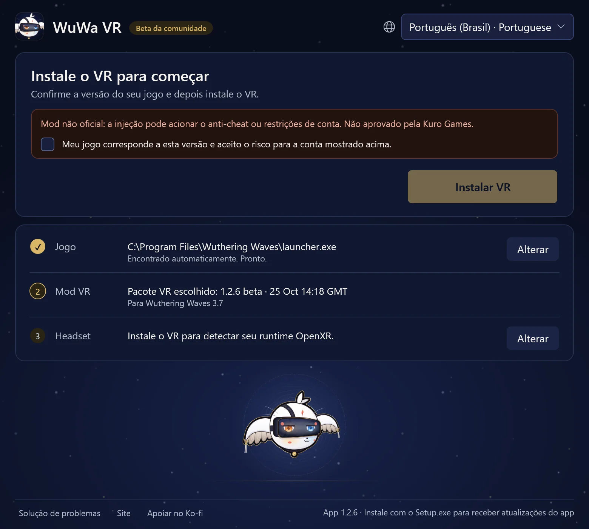
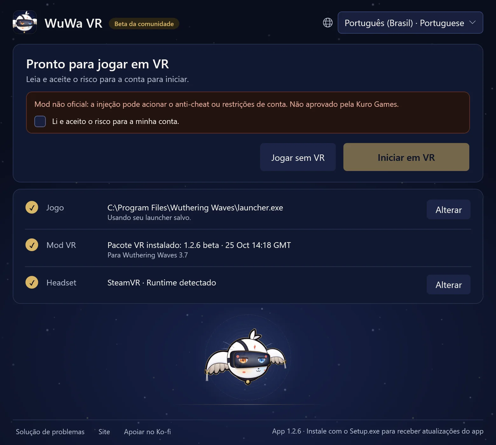
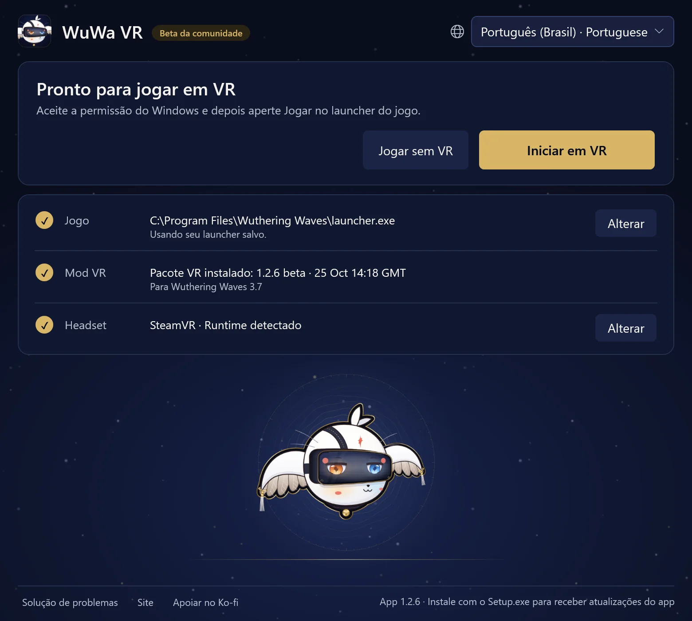

Beta da comunidade
Entre em Wuthering Waves
Um mod de VR gratuito, feito por fãs, para Windows. Ande por Solaris-3 em escala real com rastreamento de cabeça, corpo em primeira pessoa e atalhos no controle. Baseado no UEVR de praydog.

1.2.7 · Wuthering Waves 3.8
Veja em VR
Imagens reais do headset, gravadas com o mod. Os vídeos da história estão em 3D: abra no app do YouTube do seu headset para ver a profundidade.
She eats the apples mid-juggle 🍎 Wuthering Waves in VR (3D)Sem spoilers

Um vídeo só carrega do YouTube (youtube-nocookie.com) quando você escolhe.
Todos os vídeos e Shorts no YouTube@chronohax7186Mostrar os vídeos da história 3.7 (spoilers)
A história inteira da 3.7 em quatro partes, mais o final em 25 minutos. Contém spoilers da história.
The Wuthering Waves 3.7 finale in 25 minutes, in VR (3D)
I played the Wuthering Waves 3.7 story in VR (Part 1)
Suoming, up close in VR | Wuthering Waves 3.7, Part 2 (3D)
Face to face with Hsin in VR | Wuthering Waves 3.7, Part 3 (3D)
Wuthering Waves in VR: Part 4, the Waking Moon Festival (3D)


Instale e depois Iniciar em VR
O launcher é uma tela só: um título que diz o que vem a seguir, Iniciar em VR e Jogar sem VR, e depois seu Jogo, o Mod VR e o Headset. Suas escolhas ficam salvas, e você não precisa de Python nem de outras ferramentas.
Instalar
Execute o WuWa-VR-Setup.exe e abra o WuWa VR pelo menu Iniciar. A primeira instalação do mod VR precisa de internet.
Configurar uma vez
O launcher encontra sua cópia da Steam ou do launcher oficial da Kuro. Leia o aviso de risco para a conta e selecione Instalar VR. A Epic ainda não é suportada.
Iniciar em VR
Abra o software do seu headset ou escolha o simulador incluído em Headset. Selecione Iniciar em VR e aceite a permissão do Windows; quatro etapas simples levam você ao VR.






Telas reais do launcher, geradas pelo app em português. Seus caminhos e seu runtime serão diferentes.
No jogo, L3 + R3 abre o menu do WuWa VR. As configurações completas do UEVR ficam na página Menu: All settings (classic UEVR menu). Guia completo de instalação, atualização e recuperação
Feito para jogar, não só para olhar
VR estéreo e rastreamento de cabeça
Profundidade real em headsets OpenXR. Menus e HUD continuam usáveis, e dá para mover, redimensionar ou esconder a interface.
Feito para controle
Atalhos para Xbox, PlayStation (experimental), controles de VR e teclado. Segure L3 ou LT + RT e um card mostra o que cada botão faz.
Corpo em primeira pessoa
Veja as mãos e a roupa do seu personagem com a cabeça oculta. Acompanhamento da animação opcional, com modo de conforto.
Câmeras livres
Visões de câmera livre, drone, avião e acrobacias para explorar e tirar capturas. Experimental.
Janela 6DOF
Um modo de janela opcional que coloca o jogo no seu quarto. Adaptado do trabalho de Elliott Tate.
Os dois olhos combinam
Árvores distantes, objetos e luz indireta combinam em cada olho, e o mundo parece uma cena só.
Primeira pessoa, até a animação parada
Olhe para baixo e lá está seu personagem: mãos, roupa e animações paradas em escala real. Esconda os ossos da cabeça e mantenha o corpo, ou siga a animação completa para uma visão mais viva.
Grave seus próprios clipes em alta resolução (em inglês)Passo a passo: primeira pessoa, imagem limpa e o gravador integrado.Atalhos do controle
A maioria dos atalhos é L3 mais um botão: segure o analógico esquerdo pressionado, aperte o botão e solte tudo. Na VR, segure L3 ou LT + RT por meio segundo e este cartão aparece abaixo da sua visão.

- LTJanela do portal
- LBModo HUD / mouse
- ViewPrimeira pessoa
- Direcional ↓Primeira pessoa: animação completa
- RTDiorama (10×)
- RBCâmera normal / fixa
- MenuManter este card aberto
- Y/XCâmera cima / baixo
- BMostrar / ocultar interface
- ARecentralizar visão
- R3Menu do WuWa VR
Gestos
- R3×2Câmera livre
- L3×2Captura de tela
- LT+RT→R3Clique: VR completo / tela estéreo
- LT+RT→R30.8 sSegurar: cinema mono liga / desliga
- LT+RT→L3Clique: desfoque ligar / desligar
- LT+RT→YApertar: ocultar personagens nos seus olhos
chronohaxx.github.io/wuwa-vr
O suporte a PlayStation é experimental.
Perguntas
Quais headsets funcionam?
O WuWa VR usa OpenXR. Ele foi jogado em um Bigscreen Beyond via SteamVR e em um Quest Pro via SteamVR e via Virtual Desktop, com um controle de Xbox. Outros headsets OpenXR também devem funcionar. O simulador incluído permite testar em uma tela plana.
Steam, launcher da Kuro ou Epic?
A Steam e o launcher oficial da Kuro são compatíveis. A Epic ainda não.
Minha conta pode ser restringida?
Sim, é possível. O mod é injetado no jogo e o anti-cheat pode detectá-lo. A Kuro Games não o aprovou. Leia o aviso de risco antes de instalar.
O Windows avisa sobre o instalador. É normal?
O instalador não tem assinatura de código, então o SmartScreen pode avisar. Baixe somente da versão no GitHub do projeto e compare o checksum SHA-256. Nunca desative o antivírus nem o anti-cheat.
Como funcionam as atualizações?
O app verifica as próprias atualizações e pergunta antes de reiniciar. Se abrir com o jogo fechado, ele instala sozinho um pacote VR mais novo para a sua versão do jogo, e Usar a versão instalada anterior em Solução de problemas → Mais opções volta ao que você tinha.
Ele altera os arquivos do jogo?
Não. O launcher não mexe nos arquivos do jogo; o mod de VR é injetado ao iniciar.
Como desinstalo?
Use Solução de problemas → Mais opções → Preparar desinstalação no app e depois remova o WuWa VR em Configurações do Windows → Apps. Suas configurações do UEVR voltam a ser como antes do mod; backups e gravações ficam guardados, a menos que você os apague.
É grátis?
Sim. É um projeto de fãs gratuito e o launcher é código aberto com licença MIT. O apoio no Ko-fi é opcional e não compra nenhuma garantia.
Limitações conhecidas
- Alguns carregamentos de cenas e diálogos podem travar, e menus planos podem mostrar um fundo em movimento.
- A atualização da proporção do HUD não é confiável; parte da iluminação de NPCs, reflexos e névoa ainda precisa de testes.
Código aberto e downloads verificáveis
O launcher para desktop é código aberto com licença MIT e nossas mudanças no mod são públicas. Cada versão traz o código correspondente e checksums SHA-256.
Feito sobre o trabalho da comunidade
O WuWa VR se apoia no trabalho de praydog e dos colaboradores do UEVR, mirudo2 (polar), SannpoKun, Indath, endlessfalls e Elliott Tate.
Créditos e licenças (em inglês)Apoiar no Ko-fiAjude a melhorar